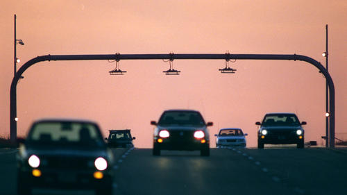

Pakistan Toll
How To Pay Tolls
Go-Fast Tag Payments
- With a Toll Tag account your tolls are prepaid. You will need to keep enough money in your account to pay for your tolls. You can add money to your account when the balance gets low, or you can sign up for AutoPay (automatic replenishment), so you never have to worry about how much money is in your Toll Tag account.
- AutoPay
AutoPay is the easiest way to manage your Toll Tag account. With AutoPay, you simply set up your account with a credit or debit card to be charged automatically when your account drops to a preset low balance amount. The low balance amount will depend on the number of Toll Tags on your account. There is no fee for this secure and convenient service. - You can sign up for AutoPay by logging into your account online and providing your credit or debit card information, or by calling the Toll Tag Customer Service Center. As an AutoPay customer, it is important to keep your credit or debit card information current so that sufficient funds are available to pay your tolls. You can include up to three credit or debit cards on your account.
- Your AutoPay replenishment amount that will be charged to your credit or debit card is adjusted quarterly based on your average monthly toll usage.
- Note: If you enroll in AutoPay, you will receive your TxTag stickers for free. Customers not signed up for AutoPay will be charged a $13.85 fee for new or replacement Go Fast Tags.
- Manual Pay
If you prefer to make manual payments to your TxTag account, you must monitor your account to ensure sufficient funds are available at all times. If you do not have enough money in your account to cover your tolls, you will be charged at the higher Pay By Mail toll rates and receive statements by mail with an additional $1.15 fee until your Toll Tag account is replenished. - Ways to add money to your Go-Fast Tag account:
Online or By Phone Log in to your account or call the Toll Tag Customer Service Center at 1-888-468-9824 (International: 001-214-210-0493 ) to add money with a credit or debit card.
In Person Visit the Toll Tag Customer Service Center in Austin where cash, check, money order, and credit card payments are accepted. Walk-up counter service is available Monday and Friday 8 a.m. to 7 p.m. or Tuesday - Thursday 8 a.m. - 5 p.m.
By Email
Mail a check or money order to:
Toll Tag
P.O. Box 650749
Dallas, TX 75265-0749.
Make check payable to "TxTag CSC" and be sure to include your TxTag account number on the check or money order. Please allow 5-7 working days for mail delivery and posting to your account. Do not send cash in the mail.
- About us
- Terms
- Services
- More Info
- Links
- Feed Back
Join Us